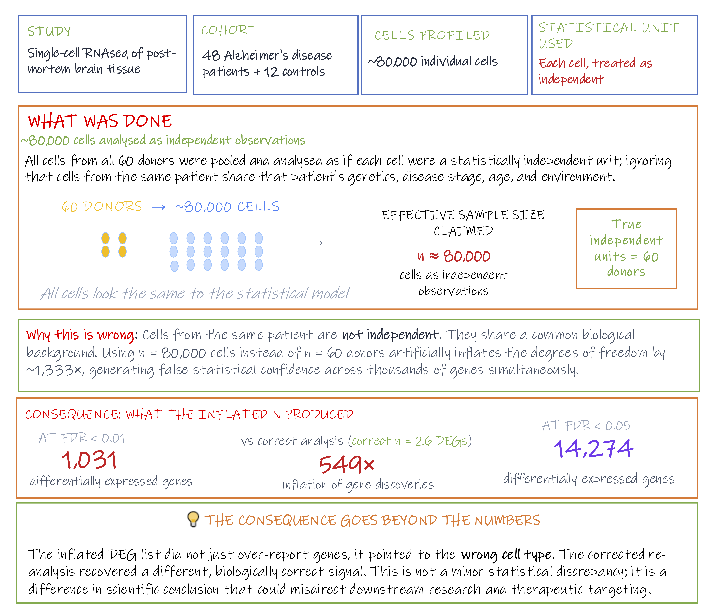

Module 1.2.4: Analysis
By the time data reach the analysis stage, the decisions that most determine what is discoverable have already been made. What remains is to choose appropriate statistical methods to test the biological question.
The statistical models used to answer our scientific questions must reflect the structure of the data. This includes:
- Distribution of the outcome variable
- Dependencies between observations
- Covariates that need to be accounted for
A model that ignores the hierarchical structure of the data will produce test statistics that are too optimistic. A model that applies the wrong distributional assumption to count data, or that treats a continuous outcome as categorical, will misrepresent the evidence.
This stage also introduces its own sources of error. Testing tens of thousands of features simultaneously, as is routine in omics, guarantees that some will appear significant by chance unless the false discovery rate is explicitly controlled. Treating multiple measurements from the same individual as independent observations inflates the effective sample size in ways that can produce thousands of false positives. Computational controls help quantify these risks, but they cannot substitute for experimental controls that were never included.
Consideration 7: Adequate controls
Design principle
Computational controls can quantify and partially mitigate technical noise in the data. They cannot compensate for experimental controls that were never included, or recover information that was never collected.
Analytical controls are not a substitute for experimental controls. Where experimental controls (negative controls, spike-ins, technical replicates) assess whether the measurement process itself was reliable, computational controls can be used to assess whether analytical results are more extreme than expected by chance, or whether identifications meet a minimum confidence threshold.
In proteomics, decoy databases (constructed from reversed or randomised protein sequences) are searched alongside the real database. Because a match to a decoy sequence cannot be biologically real, the rate at which decoys are matched gives an empirical estimate of the false discovery rate among the real identifications.
In statistical analysis more broadly, permutation tests build a null distribution by repeatedly shuffling the observed group labels and recomputing the test statistic; the proportion of permuted statistics as extreme as the observed value estimates the probability of the result arising by chance.
Case Study: The placental microbiome
Multiple high profile studies reported the existence of a placental microbiome using 16S amplicon sequencing; a clinically significant claim with implications for preterm birth and neonatal health.
All of these studies lacked negative extraction controls. Samples processed through the full extraction workflow but containing no input material. When later studies included proper controls, the bacterial signal was traced to reagent and laboratory contamination, not placental tissue.
Subsequent studies with appropriate controls found no evidence of a true placental microbiome. The earlier conclusions were entirely artefactual, and the clinical follow up work they generated was misdirected.
Why controls would have caught this: A negative extraction control processed alongside placental samples would have shown the same bacterial signal in the no input control as in the tissue samples, immediately flagging contamination before any biological conclusions were drawn.
Wagner & Kleiner. How thoughtful experimental design can empower biologists in the omics era. Nature Communications 16, 7263 (2025). doi:10.1038/s41467-025-62616-x
Salter et al. Reagent and laboratory contamination can critically impact sequence-based microbiome analyses. BMC Biology 12, 87 (2014). doi:10.1186/s12915-014-0087-z ← primary reference — first systematic demonstration of kit contamination
The unrecoverable rule
If information was never collected or never measured, it cannot be reconstructed retrospectively. At best, its impact can be assessed, acknowledged, or partially mitigated. In many situations, the only definitive solution is to redesign and repeat the study.
Consideration 8: Computational and analytical controls
Design principle
Statistical inference should be performed at the level of the experimental unit, not the observational unit. Treating multiple measurements from the same experimental unit as independent replicates inflates the effective sample size and overstates confidence in the results.
In the simplest omics study designs, the unit of treatment and the unit of measurement are the same thing: one patient, one sample, one measurement. The distinction between experimental and observational units only becomes critical when they come apart, and in omics, they come apart frequently.
The experimental unit is the smallest unit that could independently have received a different condition or treatment. In a case-control cohort, that is each patient. In an animal study, each mouse. In a cell culture experiment, each independently treated flask. The observational unit is the entity a measurement is actually taken on — a tissue biopsy, a single cell, a technical replicate measurement. In the simplest designs these are the same. When they are not, treating observational units as experimental units is pseudoreplication.
This happens in two ways:
- Subsampling occurs when many observational units are profiled from a single experimental unit, thousands of cells from one donor, multiple biopsies from one patient, repeated measurements from one sample. The donor, patient, or sample is still the experimental unit; the cells, biopsies, or measurements are nested within it and are not independent.
- Pooling collapses multiple biological units into a single experimental unit before measurement. However many donors contributed to a pooled sample, only one pooled unit was independently created. Those donors are no longer experimental units in their own right once their material is combined.
Both failures produce the same statistical consequence: the effective sample size is larger than the true number of independent units, degrees of freedom are inflated, and confidence in the results is overstated. The difference is where in the workflow the problem is introduced. Pooling fixes the number of true experimental units before data collection begins; subsampling is a modelling choice made at analysis, and is sometimes correctable there.
Multiplexing is not pooling
Multiplexing combines separately barcoded libraries onto the same sequencing run for efficiency. Each library traces back to one experimental unit, and demultiplexing after sequencing recovers them as fully independent samples. Ten barcoded patient samples run together on one lane are still ten experimental units once demultiplexed. Pooling merges the biological material before any barcode is attached; once that happens, there is no computational step that can separate the contributions back out.
Pseudoreplication in single-cell RNA-seq
Unlike bulk RNA-seq, which measures average gene expression across thousands of cells, single-cell RNA-seq profiles each cell individually, capturing the variation that bulk methods average away. A single experiment can generate profiles for tens of thousands of cells from a handful of donors. This resolution comes with a statistical trap: cells from the same individual share a common genetic and environmental background — they are subsamples of that individual, not independent observations. Analysing them as independent replicates inflates the degrees of freedom and elevates the false positive rate.

Case study: Pseudoreplication in single-cell omics
A reanalysis of a high-profile Alzheimer's disease scRNA-seq study illustrates the scale of the problem. The original analysis treated each cell as an independent observation, inflating the effective sample size from 60 donors to approximately 80,000 cells. When corrected using a pseudobulk approach — aggregating cells to the donor level before testing — the number of reported differentially expressed genes dropped from 1,031 to 26 at FDR < 0.01: a 549-fold inflation. The corrected analysis also pointed to a different, biologically more plausible cell type.

Original study: Mathys et al. "Single-cell transcriptomic analysis of Alzheimer's disease." Nature 570 (2019)
Module 1.2.4 takeaways
- Studies that lack appropriate experimental controls may be uninterpretable regardless of the analysis applied.
- Statistical inference should be performed at the level of the experimental unit.
- Subsampling and pooling both break the independence assumption, inflating the effective sample size.
- Multiplexing is not pooling. Barcoded samples run together on one sequencing lane remain independent experimental units after demultiplexing.